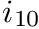

- Generated on Sat Jul 11 2020 19:24:13 for CARLsim by
 1.8.18
1.8.18
|
CARLsim
4.1.0
CARLsim: a GPU-accelerated SNN simulator
|
Once the neuron groups have been defined, the synaptic connections between them can be defined via CARLsim::connect. CARLsim provides a set of primitive connection topologies for building networks as well as a means to specify arbitrary connectivity using a callback mechanism. The following sections will explain this functionality in detail.
For users migrating from CARLsim 2.2, please note that the signature of the CARLsim::connect call has changed (see 4.4 Migrating from CARLsim 2.2).
CARLsim provides a number of pre-defined connection types: All-to-all, random, one-to-one, and Gaussian connectivity. All-to-all (also known as "full") connectivity connects all neurons in the pre-synaptic group to all neurons in the post-synaptic group (with or without self-connections). One-to-one connectivity connects neuron i in the pre-synaptic group to neuron i in the post-synaptic group (both groups should have the same number of neurons). Random connectivity connects a group of pre-synaptic neurons randomly to a group of post-synaptic neurons with a user-specified probability p. Gaussian connectivity uses topographic information from the Grid3D struct to connects neurons based on their relative distance in 3D space.
Pre-defined connection types are specified using CARLsim::connect, which in their complete form look like the following:
Here, a pre-synaptic group with ID grpIdPre is connected to a post-synaptic group with ID grpIdPost following a given connection probability of 50% (0.5f) and a specific connection type, the latter being a string such as "full", "one-to-one", "random", etc. The synapse type (either fixed or plastic) can be indicated with the keyword SYN_FIXED or SYN_PLASTIC. In COBA Mode, receptor-specific gain factors can be specified for fast (1.5f) and slow channels (0.5f), which map either to AMPA and NMDA for excitatory connections, or GABAa and GABAb for inhibitory connections (see 4.1.4 Synaptic Receptor-Specific Gain Factors).
Also, this method makes use of three different structs that aim to simplify the specification of weight ranges (RangeWeight, explained in 4.1.1 The RangeWeight Struct), delay ranges (RangeDelay, explained in 4.1.2 The RangeDelay Struct), and spatial receptive fields (RadiusRF, explained in 4.1.3 The RadiusRF Struct).
The simplest CARLsim::connect call that uses default values for all optional arguments reads as follows:
This will connect grpIdPre to grpIdPost with connection type type and connection probability prob, using fixed synapses, 1ms delay, no spatial receptive fields, and synaptic gain factor 1.0f.
RangeWeight is a struct that simplifies the specification of the lower bound (RangeWeight.min) and upper bound (RangeWeight.max) of the weights as well as an initial weight value (RangeWeight.init). For fixed synapses (no plasticity) these three values are all the same. In this case, it is sufficient to call the struct with a single value wt: RangeWeight(wt). This will set all fields of the struct to value wt.
On the other hand, plastic synapses are initialized to RangeWeight.init, and can range between RangeWeight.min and RangeWeight.max.
Note that all specified weights are considered weight magnitudes and should thus be non-negative, even for inhibitory connections.
The following code snippet would fully connect neuron group grpIdPre to grpIdPost with plastic synapses in the range 0.0f and 0.2f, initialized to 0.1f, connection probability 1 (100%), with no particular spatial receptive field, and 1ms synaptic delay:
Similar to RangeWeight, RangeDelay is a struct to specify the lower bound (RangeDelay.min) and upper bound (RangeDelay.max) of a synaptic delay range. Synaptic delays are measured in milliseconds, and can only take integer values.
The following code snippet would fully connect neuron group grpIdPre to grpIdPost with fixed synapses (weight is 0.25f), connection probability 1 (100%), no particular spatial receptive field, and synaptic delays that are uniformly distributed between 1ms and 20ms:
Each connection type can make use of an optional RadiusRF struct to specify circular receptive fields (RFs) in 1D, 2D, or 3D, following the topographic organization of the Grid3D struct (see 3.3.2 Topography). This allows for the creation of networks with complex spatial structure.
Spatial RFs are always specified from the point of view of a post-synaptic neuron at location (post.x,post.y,post.z), looking back on all the pre-synaptic neurons at location (pre.x,pre.y,pre.z) it is connected to.
Using the Grid3D struct, neurons in a group can be arranged into a (up to) three-dimensional (primitive cubic) grid with side length 1 (arbitrary units). Each neuron in the group gets assigned a (x,y,z) location on a 3D grid centered around the origin, so that calling Grid3D(Nx,Ny,Nz) creates coordinates that fall in the range [-(Nx-1)/2, (Nx-1)/2], [-(Ny-1)/2, (Ny-1)/2], and [-(Nz-1)/2, (Nz-1)/2]. For more information on the Grid3D struct, please refer to 3.3.2 Topography.
The RadiusRF struct follows the spatial arrangement (and arbitrary units) established by Grid3D. The struct takes up to three arguments, which specify the radius of a circular receptive field in x, y, and z. If the radius in one dimension is 0, say RadiusRF.radX==0, then pre.x must be equal to post.x in order to be connected. If the radius in one dimension is -1, say RadiusRF.radX==-1, then pre and post will be connected no matter their specific pre.x and post.x Otherwise, if the radius in one dimension is a positive real number, the RF radius will be exactly that number.
Examples:
In COBA Mode (see 3.2.2 COBA), synaptic receptor-specific gain factors can be specified to vary the AMPA-NMDA and GABAa-GABAb ratios.
The CARLsim::connect method takes two additional parameters at the very end, which indicate a multiplicative gain factor for fast and slow synaptic channels. The following code snippet would fully connect neuron group grpIdPre to grpIdPost with fixed synapses (weight is 0.25f, all delays are 1ms) and gain factor 1.5f for fast and 0.5f for slow synaptic channels:
If the post-synaptic neuron is of type EXCITATORY_NEURON (INHIBITORY_NEURON), then the fast channel will refer to AMPA (GABAa) and the slow channel will refer to NMDA (GABAb).
All-to-all (also known as "full") connectivity connects all neurons in the pre-synaptic group to all neurons in the post-synaptic group (with or without self-connections).
The easiest way to achieve all-to-all connectivity with a fixed weight (e.g., 0.25f), a fixed connection probability (e.g., 0.1f or 10%), and 1ms synaptic delay is via the following CARLsim::connect command:
Here, gIn and gOut are group IDs returned from a call to CARLsim::createSpikeGeneratorGroup or CARLsim::createGroup (see 3.3 Groups). The keyword "full" indicates all-to-all connectivity. RangeWeight is a struct that simplifies the specification of minimum, initial, and maximum weight values. The last parameter, 0.1f, sets the connection probability to 10%. All other parameters (such as synaptic delays, receptive field structure, and synapse type) are optional—thus by omitting them default values are used. The function returns a connection ID, cId, which can be used to reference the connection in subsequent calls; for example, when setting up a ConnectionMonitor (see 7.2 Connection Monitor).
Alternatively, while connecting a group to itself with a recurrent connection, one can use the "full-no-direct" keyword to indicate that no self-connections shall be made. If two different groups are connected with this connection type, the connection will be equivalent to a full connection.
This will prevent neuron i in the pre-synaptic group to be connected to neuron i in the post-synaptic group, if the pre and post synaptic groups are the same.
Random connectivity connects a group of pre-synaptic neurons randomly to a group of post-synaptic neurons with a user-specified probability p.
The easiest way to achieve uniform random connectivity with a fixed weight (e.g., 0.25f), a fixed connection probability (e.g., 0.1f or 10%), and 1ms synaptic delay is via the following CARLsim::connect command:
Here, gIn and gOut are group IDs returned from a call to CARLsim::createSpikeGeneratorGroup or CARLsim::createGroup (see 3.3 Groups). The keyword "random" indicates uniform random connectivity. RangeWeight is a struct that simplifies the specification of minimum, initial, and maximum weight values. The last parameter, 0.1f, sets the connection probability to 10%. All other parameters (such as synaptic delays, receptive field structure, and synapse type) are optional—thus by omitting them default values are used. The function returns a connection ID, cId, which can be used to reference the connection in subsequent calls; for example, when setting up a ConnectionMonitor (see 7.2 Connection Monitor).
One-to-one connectivity connects neuron i in the pre-synaptic group to neuron i in the post-synaptic group (both groups should have the same number of neurons).
The easiest way to achieve one-to-one connectivity with a fixed weight (e.g., 0.25f), connection probability 1 (100%), and 1ms synaptic delay is via the following CARLsim::connect command:
Here, gIn and gOut are group IDs returned from a call to CARLsim::createSpikeGeneratorGroup or CARLsim::createGroup (see 3.3 Groups). The keyword "one-to-one" indicates one-to-one connectivity. RangeWeight is a struct that simplifies the specification of minimum, initial, and maximum weight values. The last parameter, 1.0f, sets the connection probability to 100%. All other parameters (such as synaptic delays, receptive field structure, and synapse type) are optional—thus by omitting them default values are used. The function returns a connection ID, cId, which can be used to reference the connection in subsequent calls; for example, when setting up a ConnectionMonitor (see 7.2 Connection Monitor).
Gaussian connectivity uses topographic information from the Grid3D struct to connect neurons based on their relative distance in 3D space. The extent of the Gaussian neighborhood is specified via the RadiusRF struct, which accepts three parameters to specify a receptive field radius in dimensions x, y, and z. This makes it possible to create 1D, 2D, or 3D circular receptive fields.
The easiest way to achieve 2D Gaussian connectivity with radius 10 (arbitrary units) in x and y, where synaptic weights are fixed and decrease with distance, connection probability is 1 (100%), and synaptic delays are 1ms, is via the following CARLsim::connect command:
Here, gIn and gOut are group IDs returned from a call to CARLsim::createSpikeGeneratorGroup or CARLsim::createGroup (see 3.3 Groups). The keyword "gaussian" indicates Gaussian connectivity. RangeWeight is a struct that simplifies the specification of minimum, initial, and maximum weight values; and in this case it specifies the maximum weight value, which is achieved when both pre-synaptic and post-synaptic neuron code for the same spatial location. The next parameter, 1.0f, sets the connection probability to 100%. RadiusRF(10,10,0) specifies that a 2D receptive fields in x and y shall be created with radius 10 (see example below). Setting radius in z to 0 forces neurons to have the exact same z-coordinate in order to be connected. The function returns a connection ID, cId, which can be used to reference the connection in subsequent calls; for example, when setting up a ConnectionMonitor (see 7.2 Connection Monitor).
A few things should be noted about the implementation. Usually, one specifies the Gaussian width or standard deviation of the normal distribution (i.e., the parameter ). Here, in order to standardize CARLsim::connect calls across connection types, the Gaussian width is instead inferred from the RadiusRF structs, such that neurons at the very border of the receptive field are connected with a weight that is 10% of the maximum specified weight. Within the receptive field weights drop with distance squared, as is the case with a regular normal distribution. Note that units for distance are arbitrary, in that they are not tied to any physical unit of space. Instead, units are tied to the Grid3D struct, which places consecutive neurons 1 arbitrary unit apart.
Example: Consider a 2D receptive field RadiusRF(a,b,0). Here, two neurons "pre" and "post", coding for spatial locations (pre.x,pre.y,pre.z) and (post.x,post.y,post.z), will be connected iff (which is the ellipse inequality) and . The weight will be maximal (i.e., RangeWeight.max) if "pre" and "post" code for the same (x,y) location. Within the receptive field, the weights drop with distance squared, so that neurons for which (exactly equal to 1) are connected with 0.1*RangeWeight.max. Outside the receptive field, weights are zero.
Another case to consider is where the presynaptic and postsynaptic group have different Grid3D structs (or consist of different numbers of neurons). In order to cover the full space that these groups cover, the coordinate of the presynaptic group will be scaled to the dimensions of the postsynaptic group: , , and .
The following figures shows some of examples of a 2D Gaussian receptive field created with RadiusRF(9,9,0). Each panel shows the receptive field of a particular post-synaptic neuron (coding for different spatial locations) looking back at its pre-synaptic connections. The figure was generated with an OAT Connection Monitor (see Chapter 9: MATLAB Offline Analysis Toolbox (OAT)).
By making use of the flexibility that is provided by the RadiusRF struct, it is possible to create any 1D, 2D, or 3D Gaussian receptive field. A few examples that are easy to visualize are shown in the figure below. The first panel is essentially a one-to-one connection by using RadiusRF(0,0,0). But, assume you would want to connect neurons only if their (x,y) location is the same, but did not care about their z-coordinates. This could simply be achieved by using RadiusRF(0,0,-1). Similary, it is possible to permute the x, y, and z dimensions in the logic. You could connect neurons according to distance in y, only if their z-coordinate was the same, no matter the x-coordinate: RadiusRF(-1,y,0). Or, you could connect neurons in a 3D ellipsoid: RadiusRF(a,b,c).
Multi-compartment neurons can be connected with CARLsim::connectCompartments. This creates a "one-to-one" connection between two compartmentally enabled groups grpIdLower and grpIdUpper:
The order of the group IDs in this function call is crucial, as it will define the topography of the network: A compartment can have a down ("mother") and several up ("daughter") compartments, as shown in the following figure:
The network spans four groups (grpSoma, grpDend0, grpDend1, and grpDend2) of five neurons each. Each neuron in the network (labeled 0-19) is considered a compartment, with all neurons in a group belonging to the same type of compartment (e.g., somatic compartment, grpSoma). All the n-th neurons in a group together form one multi-compartment neuron (e.g., neuron 0, 5, 10, and 15).
According to (9) in 3.1.3 Multi-Compartment Neurons, the dendritic current of neuron 10, , is thus given as:
where is the membrane potential of the n-th neuron, is the coupling constant that applies to all downward connections of the n-th neuron, and is the coupling constant that applies to all downward connections of the n-th neuron. The coupling constants are set via CARLsim::setCompartmentParameters.
A group can have at most 4 compartmental neighbors.
The following code configures a network to create the network topography for the figure above:
A library of useful ConnectionGenerator subclasses will be added in a future release.
The pre-defined topologies described above are useful for many simulations, but are insufficient for constructing networks with arbitrary connectivity. Thus, if one is not satisfied with the built-in connection types, a callback mechanism is available for user-specified connectivity.
In the callback mechanism, the simulator calls a method on a user-defined class in order to determine whether a synaptic connection should be made or not. The user simply needs to define a method that specifies whether a connection should be made between a pre-synaptic neuron and a post-synaptic neuron and the simulator will automatically call the method for all possible pre- and post-synaptic pairs. The user can then specify the connection's delay, initial weight, maximum weight, and whether or not it is plastic.
To make a user-defined connection, the user starts by making a new class that derives from the ConnectionGenerator class. Inside this new class, the user defines a connect method.
The following code snippet shows a simple example that creates a one-to-one connection with 10% connection probability:
Note that within ConnectionGenerator::connect it is possible to access any public methods of the CARLsim class. This makes it possible to, for example, create a custom connection function that takes into account the relative position of neurons (using CARLsim::getNeuronLocation3D). The following code snippet slightly adjusts the above code snippet to produce topographic one-to-one connectivity; that is, neurons are only connected if their 3D coordinates are exactly the same.
Please note that the signature of the CARLsim::connect call has changed since CARLsim 2.2 in order to avoid confusion concerning the large number of (float) input arguments.
minWt, initial weight initWt, and maximum weight maxWt in 2.2 translate to RangeWeight(fabs(minWt),fabs(initWt),fabs(maxWt)) in 3.0, where fabs returns the absolute value of a float, and minWt must always be zero (for now).uint8_t variables. Instead, the RangeDelay struct accepts a lower and upper bound for the delay range. Connections with minimum delay minDelay and maximum delay maxDelay in 2.2 translate to RangeDelay(minDelay,maxDelay) in 3.0.const string& wtType is no longer supported. 1.8.18